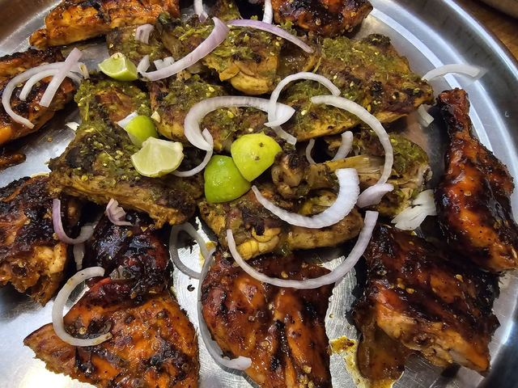
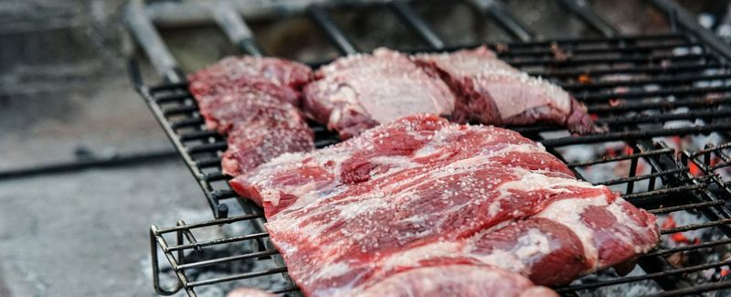

Sofra
Reyonun öbür yanı: etin ateşle buluştuğu yer. Aşağıda et sofralarının alışılmış listesini, pişirme derecelerini ve ızgaranın inceliklerini bulacaksınız. O gün ocaktan ne çıktığını öğrenmek için gelmeden bir arayın.
Her gün 08:00–19:30

Etiniz nasıl pişsin?
Garson “nasıl olsun?” diye sorduğunda ne demek istediğini görün. Bir dereceye dokunun, kesit değişsin.
Orta-az
Merkez 54–57 °C
Ortası kırmızıdan pembeye döner, sıcak ve suludur.
Kıyma ve tavukta derece seçilmez.
Köfte ve kıymalı yemekler ortası en az 71 °C'ye, tavuk 74 °C'ye ulaşana kadar pişirilir; pembe kalmamalıdır.
Izgara başında altı kural
Reyondan aldığınız eti evde pişirecekseniz, ustaların hemfikir olduğu noktalar.

- Eti dolaptan erken çıkarınBuz gibi et ateşe girerse dışı yanar, içi çiğ kalır. Pişirmeden yarım saat kadar önce çıkarın.
- Alevde değil korda pişirinKömür üstü küllenip kor haline gelmeden et konmaz. Alev eti isler ve acılaştırır.
- Yüzeyi kurulayınIslak et mühürlenmez, haşlanır. Kâğıt havluyla kurulayıp öyle ateşe verin.
- Bastırmayın, sık çevirmeyinMaşayla bastırmak suyunu akıtır. Bir yüzü kabuk bağlayınca çevirin.
- Tuzu doğru zamanda atınBifteği ya ateşe koymadan hemen önce ya da piştikten sonra tuzlayın; köfte harcına tuz yoğururken girer.
- DinlendirinAteşten alınan eti birkaç dakika bekletin. Hemen kesilirse suyu tabağa akar.
Hangi et nasıl pişer?
Yumuşak parça kısa ve sert ateşi, sert parça uzun ve yumuşak ateşi sever. Ters yapınca ikisi de küser.
| Yöntem | Uygun parçalar | Püf noktası |
|---|---|---|
| Izgara, mangal | Antrikot, kontrfile, bonfile, kuzu pirzola, külbastı, köfte | Kızgın ızgara, kısa süre. Et kalınsa ortayı kısık kora çekin. |
| Tava | Biftek, yaprak, şnitzel, sote, sucuk | Döküm tava iyice ısınmadan et girmez; tavayı doldurmayın. |
| Fırın | Rosto, kuzu but ve kol, incik, kaburga | Önce mühürleyin, sonra üstü kapalı ve düşük ısıda bekleyin. |
| Tencere | Kürekten ve buttan kuşbaşı, gerdan | Eti önce kavurun, suyunu çekince sıcak su ekleyin. |
| Haşlama | İncik, gerdan, kaburga, döş | Soğuk suyla başlayın, köpüğünü alın, kaynatmadan tıkırdatın. |
| Tandır, ağır ateş | Kuzu kol, gerdan, dana döş | Saatlerce düşük ısı. Et kemikten kendiliğinden ayrılınca olmuştur. |
Parçaların hayvanın neresinden çıktığını görmek için dana kesim şemasına ve kuzu şemasına bakın.
Gelmeden sorun
Kaç kişi geleceğinizi ve ne öğrenmek istediğinizi işaretleyin; mesajınız hazır olsun.
Mesajınız
Göndermeden önce WhatsApp'ta düzenleyebilirsiniz
Merhaba Öz Alipaşa Et Pazarı, sofra için bilgi almak istiyorum.
Sofra hakkında sorulanlar
Menü ve fiyatlar neden yazmıyor?
Et fiyatı ve günün çıkanı sık değişir. Yanlış bilgi vermektense güncelini telefonda söylemek daha doğru.
Kalabalık gelirsek ne yapmalıyız?
Gelmeden önce kişi sayısını ve saatinizi bildirip yer durumunu sorun. Yukarıdaki form mesajı sizin için hazırlar.
Paket yaptırabilir miyim?
İşletmeye sorun. Çiğ et siparişi için sipariş listesini kullanabilirsiniz.
Hangi saatlerde açıksınız?
Her gün 08:00–19:30. Akşam geç saatte gelecekseniz kapanış saatini göz önünde bulundurun.